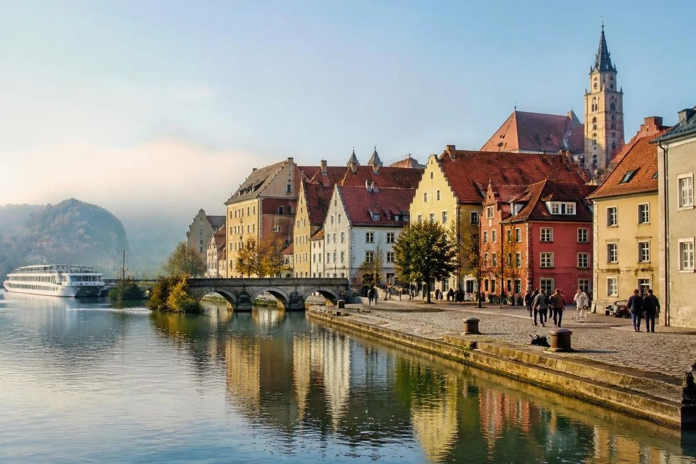
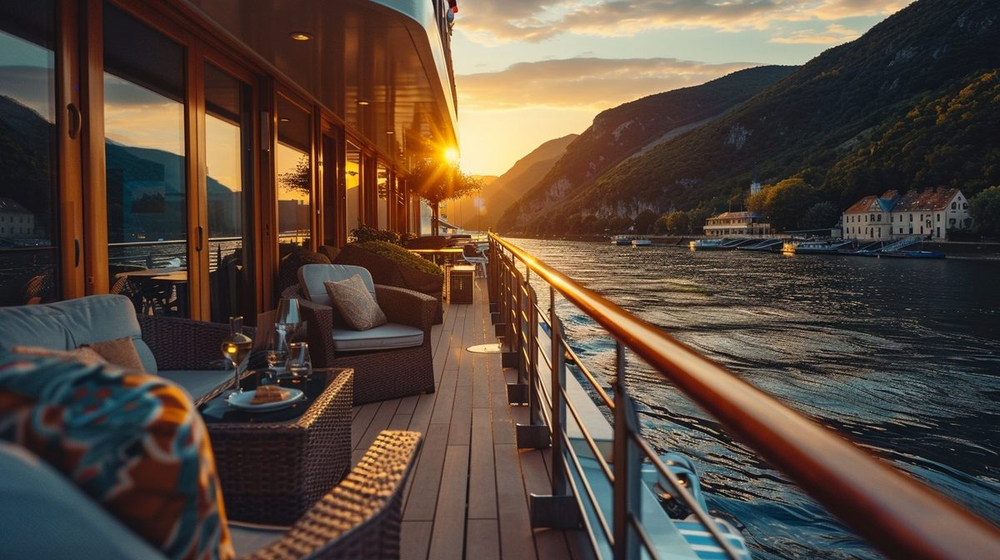
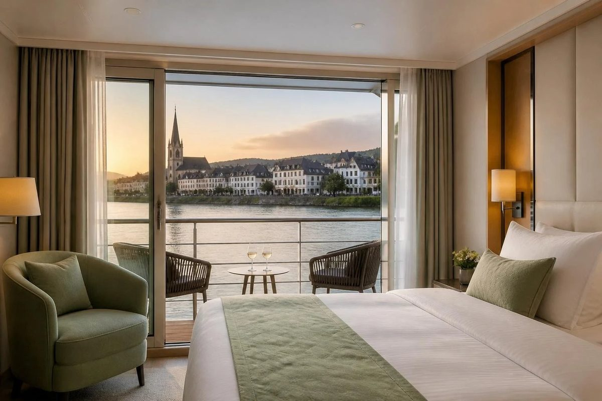
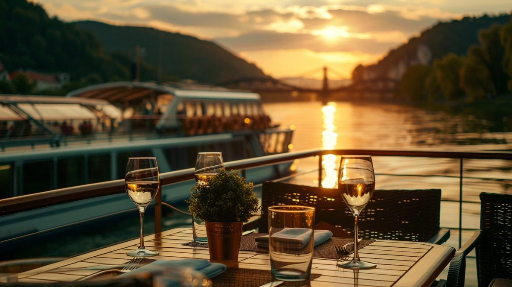

River Cruises
River Cruise vs Ocean Cruise: Which One Is Right for You?

If you are comparing a river cruise vs an ocean cruise, the first thing to know is that they are not two versions of the same trip. They are different ways to travel, and the right one depends on how you want your days to feel.
A river cruise is a small, quiet ship that moves each night and ties up in the middle of a historic town by morning. An ocean cruise is a larger floating resort that visits a range of ports, often across several countries. Here is how the two compare, followed by a simple way to decide.
River Cruise vs Ocean Cruise: The Quick Comparison
| River cruise | Ocean cruise | |
|---|---|---|
| Ship size | Smaller, more intimate | Larger, with more guests |
| Pace | Ashore for part of most days | Plenty of time to relax onboard |
| Where you go | One region or a few neighboring countries | Several ports, often several countries |
| Docking | Often close to the center of town | Ports that suit large ships, sometimes farther from town |
| Onboard entertainment | Quiet and limited, such as a pianist or local performance | Extensive, from shows to pools and activities |
| Dining | Fewer venues, often set mealtimes | Many venues, including specialty restaurants |
| Cabins | Often smaller, with big windows or balconies | A wider range, from compact to large suites |
| Excursions | Often included, depending on the line | Usually an added cost, depending on the line |
| Best for | Culture, history, and a calm pace | Variety, onboard amenities, and family trips |
These are general patterns. Every cruise line is different, so confirm what your specific sailing includes before you book.

Is a River Cruise Right for You? Who Loves River Cruising
- You would rather see towns, markets, and landmarks than sit by a pool.
- You want to unpack once and wake up somewhere new.
- You prefer a smaller, quieter ship with a more personal feel.
- You dislike motion and want calm water.
- You want a trip that feels cultural and unhurried, rather than busy with activities.

Is an Ocean Cruise Right for You? Who Loves Ocean Cruising
- You want a lot to choose from onboard: restaurants, shows, pools, and spas.
- You want to see several islands or countries in a single trip.
- You are traveling with children or a mixed group with different interests.
- You like having a range of cabin types, including large suites.
- You enjoy sea days with nothing to do but relax.
River or Ocean Cruise? A 5-Question Check to Decide
- Would you rather explore or unwind? Explorers lean toward river. Unwinders lean toward ocean.
- How important is onboard entertainment? If it is a big part of the trip, ocean ships offer far more.
- Who is coming? Couples and friends often love river cruising. Families with young children usually do better on an ocean ship.
- How do you feel about motion on the water? River cruising is much calmer.
- How do you like to eat? Variety and choice favor ocean. A set menu with regional specialties favors river.
If your answers split, that is useful information too. It usually means a conversation about your trip will help more than another comparison chart. The free Ocean or River? guide includes a self check and questions to ask any cruise line.

First-Time Cruise Mistakes to Avoid
- Comparing only the fare. Add up excursions, drinks, and gratuities to compare the true cost of each trip.
- Choosing by ship photos. Two ships can look similar online and feel completely different. Ask about the atmosphere, the typical guest, and the dining style.
- Ignoring cabin location. A cabin near noisy areas can change your whole trip. Ask where each category sits on the ship.
- Booking flights too late. Cruises depart on fixed dates, and flights that arrive on the day of departure leave no room for delays.
- Forgetting about river levels. High or low water can change river itineraries. Ask each line how it handles it.
Should You Book a Cruise With a Travel Advisor?
Cruises have many variables: line, ship, itinerary, cabin category, flights, and what is included. A travel advisor narrows those to a few that match you, checks the details that change the experience, and handles the booking and the timing around it. If you want help choosing, you can read how I plan river cruises or book a consultation and we can talk through it.
River Cruise vs Ocean Cruise Questions Answered
Is a river cruise better than an ocean cruise?
Neither is better. They are different trips. River cruises suit travelers who want an intimate ship and a deeper look at one region. Ocean cruises suit travelers who want variety onboard, more ports, and a ship that feels like a resort.
Are river cruises more expensive than ocean cruises?
The headline price is often higher on a river cruise, but river cruises typically include more, such as excursions and some drinks, depending on the line. Compare the full cost of each trip, including excursions, drinks, and gratuities, rather than the fare alone.
Do you get seasick on a river cruise?
Much less often. River ships sail on calm inland waterways, so there is little of the motion you can feel at sea. Travelers who worry about motion sickness often prefer river cruising.
Is a river cruise good for a honeymoon or couples trip?
Yes, for couples who want a quiet, scenic, culture-rich trip. The smaller ship, the evening atmosphere, and the daily stops in historic towns make it a romantic option. Couples who want nightlife, shows, and large pools may prefer an ocean ship.
What is the biggest risk with river cruises?
River levels. High or low water can change an itinerary, and in some cases passengers are moved between ships or transported by coach for part of the route. Ask each cruise line how it handles water level changes and what it offers if the itinerary is affected.

I am a luxury travel agent and advisor based in Gainesville and Ocala, Florida, specializing in destination weddings, honeymoons, river cruises, wellness escapes, and group travel. More about me